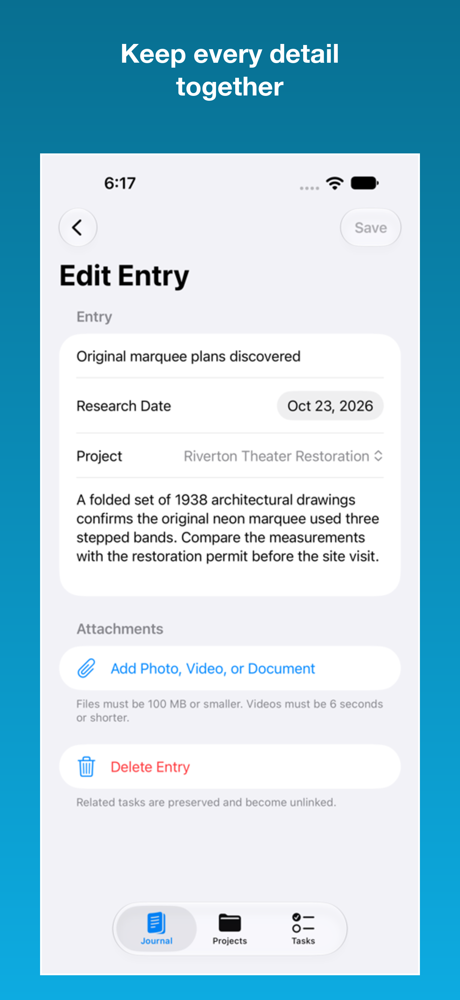
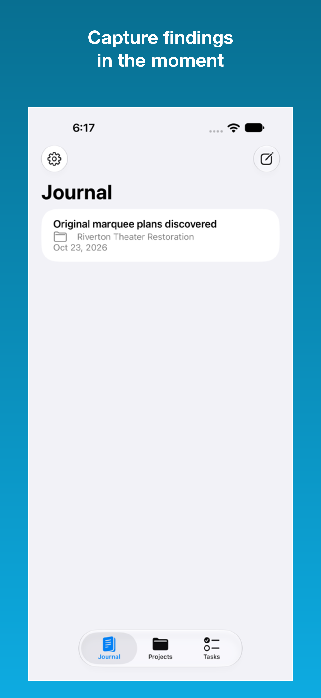
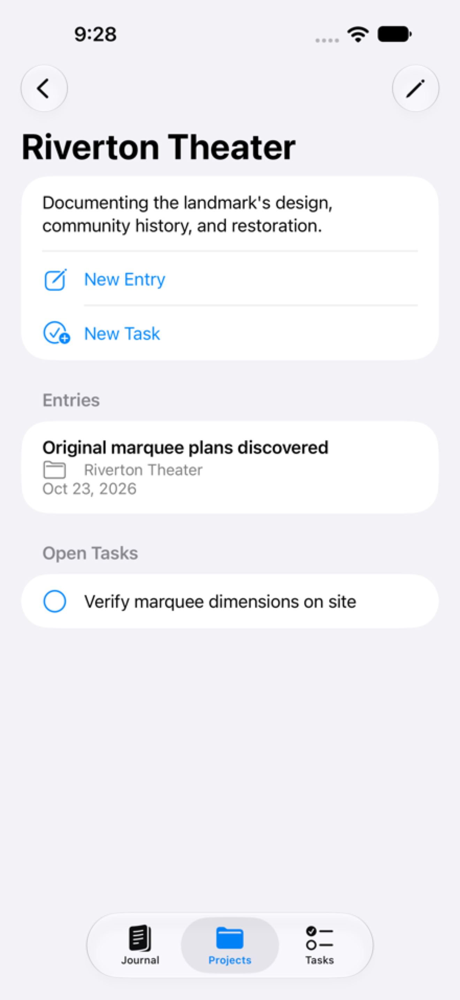

01
Capture while the detail is fresh.
Record a finding with its research date, notes, project, photos, videos, or documents. Everything that gives the observation meaning stays together.

A field notebook for focused research
Research Logger brings notes, source material, projects, and follow-up tasks into one quiet workspace—so the context behind an idea stays with it.

Research has a shape
It belongs to a line of inquiry. It has evidence attached. It suggests what to do next. Research Logger preserves those relationships without turning your work into a complicated system.
One continuous workflow
Record a finding with its research date, notes, project, photos, videos, or documents. Everything that gives the observation meaning stays together.

Bring the project question, relevant entries, and open tasks into a single view. The evidence and the work ahead remain visibly connected.

Create follow-up tasks from your research, give them due dates, and return to the entry that prompted them. Your next action keeps its original context.
Your research belongs to you
Your entries and attachments stay on your devices and in your private iCloud database when sync is enabled. Research Logger has no separate account system, no advertising, and no cross-app tracking. Optional limited usage analytics never include your research content.
See exactly how data is handledKeep the work in motion
Questions about Research Logger?
Visit support